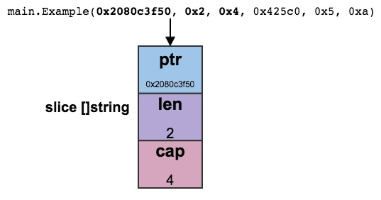
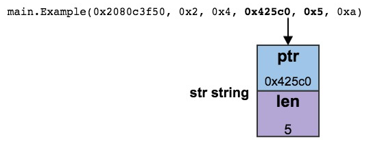
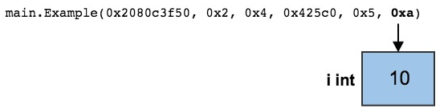

William Kennedy写了两篇关于Go 调试的文章，非常不错，特意翻译了一下，加深记忆。本文是其中的一篇： Stack Traces In Go。 另一篇是 Scheduler Tracing In Go。
Stack Trace表示堆栈跟踪，这是一个或多个堆栈帧的有序的集合。在程序出现panic的时候你会看到控制台有Stack Trace信息打印出来。
介绍
拥有基本的调试Go程序技能可以节省程序员很大的时间来发现问题。我当然相信你可以使用log信息来跟踪问题，但是有时候panic发生的时候log信息并没有提供充足的信息。如果你理解堆栈跟踪的信息，你可以即时的找出bug, 这和传统的利用日志追踪bug有很大的不同， 因为利用日志的话你需要增加更多的log然后再等待相同的错误发生。
自打我开始写Go程序的时候我就一直看堆栈跟踪信息。有些地方我们写了傻傻的代码导致运行时杀死了我们的程序并且抛出堆栈跟踪信息。我将演示堆栈跟踪信息能提供些什么信息，包括怎么找到我们传递给函数的参数的值。
函数
列表1 1 2 3 4 5 6 7 8 9 10
| package main func main() { slice := make([]string, 2, 4) Example(slice, “hello”, 10) } func Example(slice []string, str string, i int) { panic(“Want stack trace”) }
|
列表1是一个简单的程序， main函数在第5行调用Example函数。Example函数在第8行声明，它有三个参数，一个字符串slice,一个字符串和一个整数。它的方法体也很简单，只有一行，抛出一个panic，这会立即产生一个堆栈跟踪信息:
列表2 1 2 3 4 5 6 7 8 9 10 11 12 13 14 15 16 17 18 19 20 21
| Panic: Want stack trace goroutine 1 [running]: main.Example(0x2080c3f50, 0x2, 0x4, 0x425c0, 0x5, 0xa) /Users/bill/Spaces/Go/Projects/src/github.com/goinaction/code/ temp/main.go:9 +0x64 main.main() /Users/bill/Spaces/Go/Projects/src/github.com/goinaction/code/ temp/main.go:5 +0x85 goroutine 2 [runnable]: runtime.forcegchelper() /Users/bill/go/src/runtime/proc.go:90 runtime.goexit() /Users/bill/go/src/runtime/asm_amd64.s:2232 +0x1 goroutine 3 [runnable]: runtime.bgsweep() /Users/bill/go/src/runtime/mgc0.go:82 runtime.goexit() /Users/bill/go/src/runtime/asm_amd64.s:2232 +0x1
|
列表2显示了panic发生时的所有的goroutine，每一个goroutine的状态，每一个goroutine的状态，以及相应的调用堆栈。导致panic的gotoutine在最上面，我们只看这它的堆栈信息。
列表3 1 2 3 4 5 6 7
| goroutine 1 [running]: main.Example(0x2080c3f50, 0x2, 0x4, 0x425c0, 0x5, 0xa) /Users/bill/Spaces/Go/Projects/src/github.com/goinaction/code/ temp/main.go:9 +0x64 main.main() /Users/bill/Spaces/Go/Projects/src/github.com/goinaction/code/ temp/main.go:5 +0x85
|
我在Go 1.6版本下测试，堆栈跟踪信息只显示了当前panic的堆栈信息，没有显示其它的goroutine的信息。
列表3的第一行显示panic发生前运行的goroutine是id为 1的goroutine。第二行是发生panic的代码位置，位于main package下的Example函数。它也显示了代码所在的文件和路径，以及panic发生的行数(第9行)。
Line 03也调用Example的函数的名字，它是main package的main函数。它也显示了文件名和路径，以及调用Example函数的行数。
堆栈跟踪信息显示了 panic发生时的这个goroutine的函数调用链。现在让我们看看传递给Example的参数的值。
列表4 1 2 3 4 5 6 7 8 9
| main.Example(slice []string, str string, i int) slice := make([]string, 2, 4) Example(slice, “hello”, 10) main.Example(0x2080c3f50, 0x2, 0x4, 0x425c0, 0x5, 0xa)
|
列表4列举了Example函数的声明，调用以及传递给它的值的信息。当你比较函数的声明以及传递的值时，发现它们并不一致。函数声明只接收三个参数，而堆栈中却显示6个16进制表示的值。理解这一点的关键是要知道每个参数类型的实现机制。
让我们看第一个[]string类型的参数。slice是引用类型，这意味着那个值是一个指针的头信息(header value)，它指向一个字符串。对于slice,它的头是三个word数，指向一个数组。因此前三个值代表这个slice。
列表5 1 2 3 4 5 6 7 8 9 10 11 12 13
| slice := make([]string, 2, 4) Pointer: 0x2080c3f50 Length: 0x2 Capacity: 0x4 main.Example(slice []string, str string, i int) main.Example(0x2080c3f50, 0x2, 0x4, 0x425c0, 0x5, 0xa)
|
列表5显示了0x2080c3f50代表第一个参数[]string的指针，0x2代表slice长度，0x4代表容量。这三个值代表第一个参数。

让我们看看第二个参数，它是字符串类型。字符串也是引用类型，但是它的头(header)是不可变的。这个头包含两个word类型，一个是指向底层字节数组的指针，一个是字符串的长度。
列表6 1 2 3 4 5 6 7 8 9 10 11 12
| “hello” Pointer: 0x425c0 Length: 0x5 main.Example(slice []string, str string, i int) main.Example(0x2080c3f50, 0x2, 0x4, 0x425c0, 0x5, 0xa)
|
列表6显示堆栈跟踪信息中的第4个和第5个参数代表字符串的参数。0x425c0是指向这个字符串底层数组的指针，0x5是"hello"字符串的长度，他们俩作为第二个参数。

第三个参数是一个整数，它是一个简单的word值。
列表7 1 2 3 4 5 6 7 8 9 10 11
|
10 Base 16: 0xa main.Example(slice []string, str string, i int) main.Example(0x2080c3f50, 0x2, 0x4, 0x425c0, 0x5, 0xa)
|
列表7显示堆栈中的最后一个参数就是Example声明中的第三个参数，它的值是0xa，也就是整数10。

方法
让我们稍微改动一下程序，让Example变成方法。
列表8 1 2 3 4 5 6 7 8 9 10 11 12 13 14 15 16 17
| package main import "fmt" type trace struct{} func main() { slice := make([]string, 2, 4) var t trace t.Example(slice, "hello", 10) } func (t *trace) Example(slice []string, str string, i int) { fmt.Printf("Receiver Address: %p\n", t) panic("Want stack trace") }
|
列表8在第5行新增加了一个类型trace，在第14将example改变为trace的pointer receiver的一个方法。第10行声明t的类型为trace，第11行调用它的方法。
因为这个方法声明为pointer receiver的方法，Go使用t的指针来支持receiver type，即使代码中使用值来调用这个方法。当程序运行时，堆栈跟踪信息如下：
列表9 1 2 3 4 5 6 7 8 9 10 11
| Receiver Address: 0x1553a8 panic: Want stack trace goroutine 1 [running]: main.(*trace).Example(0x1553a8, 0x2081b7f50, 0x2, 0x4, 0xdc1d0, 0x5, 0xa) /Users/bill/Spaces/Go/Projects/src/github.com/goinaction/code/ temp/main.go:16 +0x116 main.main() /Users/bill/Spaces/Go/Projects/src/github.com/goinaction/code/ temp/main.go:11 +0xae
|
列表9的第5行清晰的表明方法的receiver为pointer type。方法名和报包名中间有(*trace)。第二个值得注意的是堆栈信息中方法的第一个参数为receiver的值。方法调用总是转换成函数调用，并将receiver的值作为函数的第一个参数。我们可以总堆栈信息中看到实现的细节。
因为Example其它地方没有改变，其它的值保持一样。行号显示新的代码中的行号。
Packing
当函数的参数可以填充到一个单一的word类型中时，参数的值会被打包在一起。
列表10 1 2 3 4 5 6 7 8 9
| package main func main() { Example(true, false, true, 25) } func Example(b1, b2, b3 bool, i uint8) { panic("Want stack trace") }
|
列表10改变Example的方法，让它接收4个参数。前三个参数是布尔类型的，第四个参数是8bit无符号整数。布尔类型也是8bit表示的，所以这四个参数可以被打包成一个word，包括32位架构和64位架构。当程序运行的时候，会产生有趣的堆栈：
列表11 1 2 3 4 5 6 7
| goroutine 1 [running]: main.Example(0x19010001) /Users/bill/Spaces/Go/Projects/src/github.com/goinaction/code/ temp/main.go:8 +0x64 main.main() /Users/bill/Spaces/Go/Projects/src/github.com/goinaction/code/ temp/main.go:4 +0x32
|
可以看到四个值被打包成一个单一的值了0x19010001。
列表12 1 2 3 4 5 6 7 8 9 10 11 12 13 14 15
| true, false, true, 25 Bits Binary Hex Value 00-07 0000 0001 01 true 08-15 0000 0000 00 false 16-23 0000 0001 01 true 24-31 0001 1001 19 25 main.Example(b1, b2, b3 bool, i uint8) main.Example(0x19010001)
|
列表12显示了堆栈的值如何和参数进行匹配的。true用1表示，占8bit, false用0表示，占8bit,uint8值25的16进制为x19,用8bit表示。我们课哟看到它们是如何表示成一个word值的。
结论
Go运行时提供了详细的信息来帮助我们调试程序。本文我们关注堆栈跟踪信息stack trace。解码传递个堆栈中的方法的参数帮助巨大。它不止一次帮助我快速地定位bug。 现在你也知道了如何读取这些堆栈跟踪信息，希望你能在下一次的调试中应用这个方法。